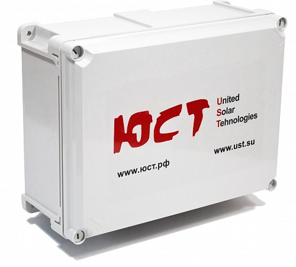
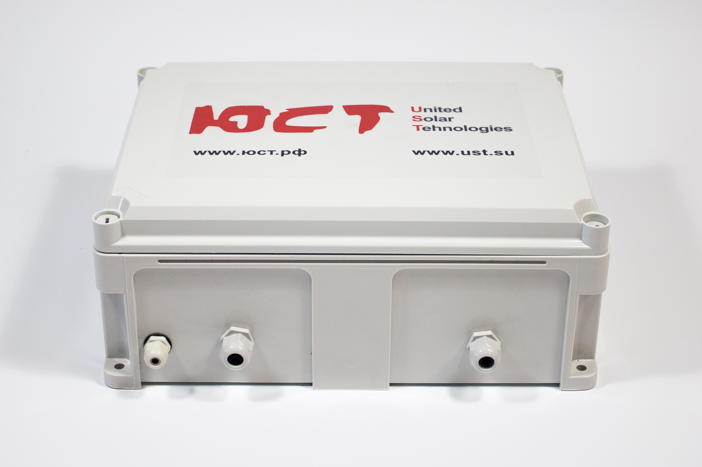
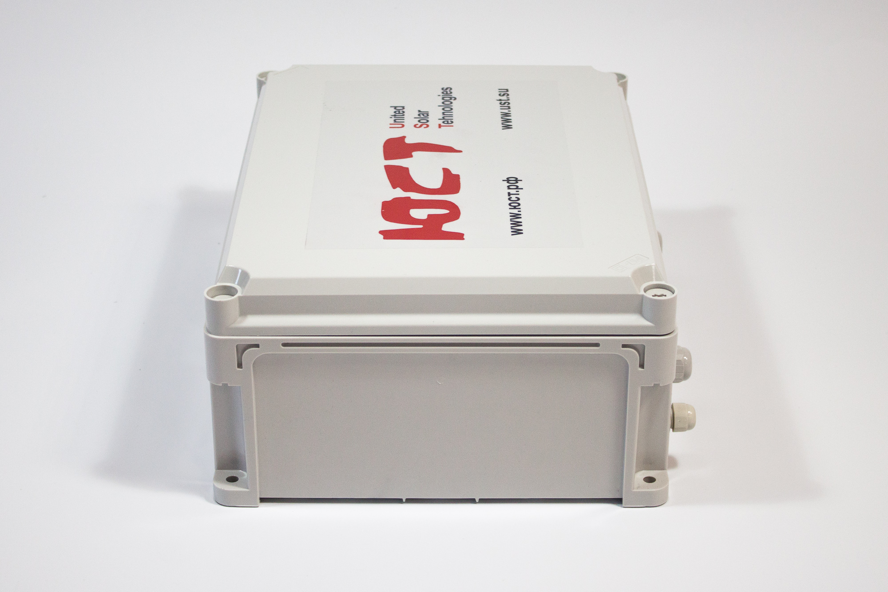
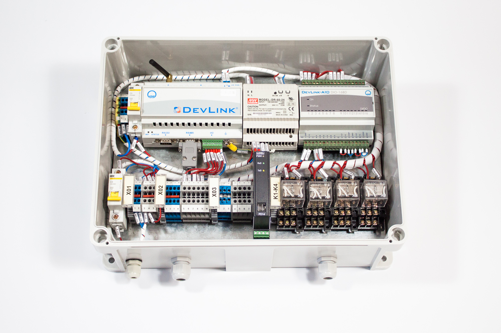
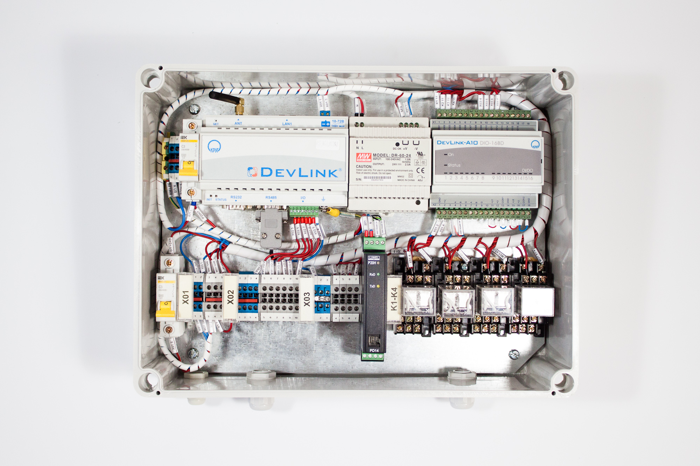
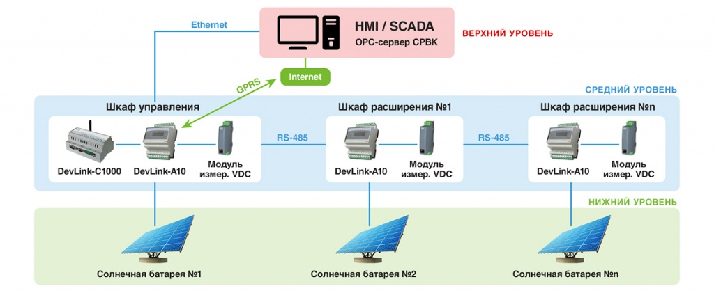

0Р
Блок управления построен на базе производимого фирмой «КРУГ» промышленного контроллера DevLink-C1000, с модулем расширения DevLink-A10.
Блок управления построен на базе производимого фирмой «КРУГ» промышленного контроллера DevLink-C1000, с модулем расширения DevLink-A10. Блок управления может управлять одним трекером или группой трекеров, в составе электростанции на солнечных батареях. Количество управляемых одним контроллером DevLink-C100 трекеров — до 64, с удалением до 1200 метров.Количество блоков управления в электростанции не ограничено. При использовании нескольких трекеров нет необходимости в шкафах управления (блоках управления) для каждого из них. Достаточно использовать только один шкаф для первого трекера, а для каждого последующего - шкаф расширения (блок расширения), что значительно уменьшает стоимость системы. Гарантируется работа 64 шкафов расширения, подключаемых к одному шкафу управления.Соединение шкафов по линии RS485.





По SPA алгоритму, реализованному в контроллере DevLink-C1000, выполняется расчет положения Солнца по азимуту и зениту с погрешностью ±0.0003°, а также время его восхода/захода и положения «в зените». Изменение положения трекера осуществляется двумя моторредукторами, каждый из которых управляется двумя пускателями («прямой» и «обратный» ход). При монтаже трекера в блок управления вводятся координаты места его установки (долгота, широта, высота над уровнем моря). Дополнительной опцией к блоку управления может быть навигатор. Использования навигатора позволяет применять трекеры на подвижных железнодорожных или автомобильных, плавучих транспортных средствах, делая электростанцию на солнечных батареях мобильной и использовать её для чрезвычайных и иных ситуаций по всему миру. Блок управления автоматически определяет параметры актуаторов каждого трекера, производит самонастройку в зависимости от типа используемого трекера. Определение положения солнечной батареи обеспечивается за счет: Дискретных датчиков «Север» и «ЮГ» −2 шт. Импульсных датчиков перемещения — 2 шт. Концевых выключателей — 2 шт ( до 4 шт.) Число датчиков может меняться в зависимости от типа трекера. Блок управления работает совместно с метеостанцией, силовым блоком и трёхфазным счетчиком потребляемой электроэнергии. Метеостанция предупреждает систему о сильном ветре и тяжелых осадках. Метеостанция передаёт дискретные сигналы «Сильный ветер» и «Тяжелые осадки». При появлении первого сигнала трекеры поворачивают солнечную батарею в положение «Горизонтально», а при появлении второго — в положение «Вертикально». Блок управления определяет вырабатываемую мощность энергосистемы и потребляемую, с фиксацией статистики. Управление трекером (настройка, тестирование, обслуживание, визуальное наблюдение) может осуществляться с помощью персонального компьютера напрямую или через проводной интернет, а также через GPRS соединения, с помощью ПК, смартфона, планшета, с использованием ресурсов портала нашей компании United Solar Trackers (UST). UST портал аккумулирует всю информацию о выпускаемых трекерах (состав, технические параметры), собирает информацию о выработке и потреблении электроэнергии каждым трекером, фиксирует метеобстановку в месте дислокации каждого трекера, осуществляет видеофиксацию, содержит техническую информацию о выпускаемых солнечных панелях, солнечных преобразователях, используемых в наших системах, и т.д. Соответственно вся информация на портал поступает через блок управления.
| Ширина | 400 |
| Масса | 5кг 700г |
| Количество управляемых одним блоком трекеров | до 64 |
| Удаление | до 1200 метров |
| Высота | 300 мм |
| Глубина | 155 мм |
| Ширина | 400 мм |
| Технические характеристики промышленного контроллера DevLink-C1000 | |
| Центральный процессор | ARM9, 400 МГц |
| Системное ОЗУ SDRAM | PC 133 МГц – 64/128 Мбайт |
| Flash-память | 128/512 Мбайт (опция – до 1024 Мбайт) |
| Интерфейсы | 1xEthernet 100 с пром. защитой от статических разрядов (ESD-защита), 1 или 4 порта RS-485/1 или 2 порта RS-422, 1xUSB-host с пром. защитой от статических разрядов (ESD-защита), 1xmini-USB (опция), 1xMicroSD (опция), 1xI2C (опция – до 20-ти цифровых датчик |
| GSM/GPRS-модуль (опция) | 2 SIM-карты |
| Универсальный вход/выход | 6xDI / 4хDI и 2хDO, 6xDI/DO, 8xAI (опция – дополнительная плата ввода-вывода) |
| Напряжение питания | 18…72В/~170…260В |
| Максимальная потребляемая мощность | 14 Вт |
| Габаритные размеры | 140х90х65 мм |
| Монтажное крепление | Рейка DIN, зажим |
| Температура окружающего воздуха | От минус 40°С до плюс 70°С |
| *- при дополнительной комплектации мезонин-платой ввода-вывода количество портов следующее: 1хRS-232, 1хRS-485. |